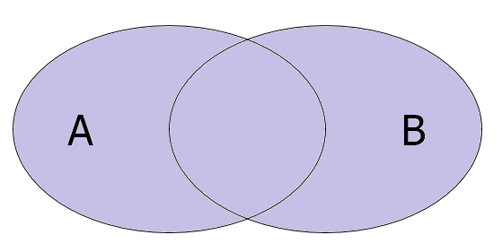
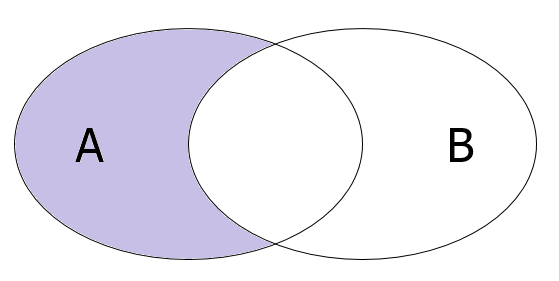
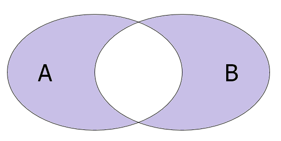
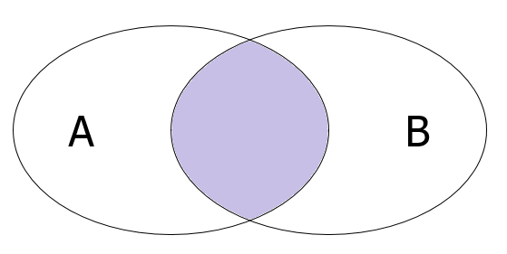
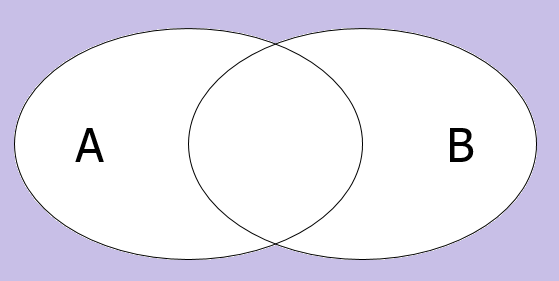
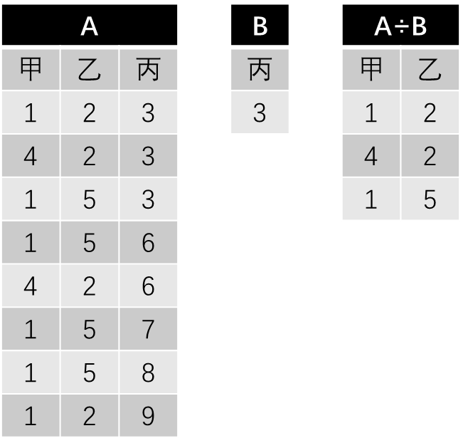
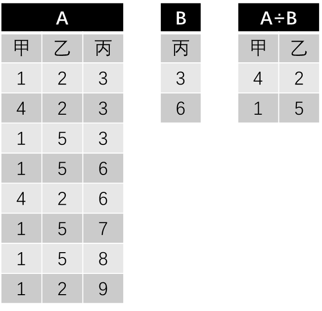
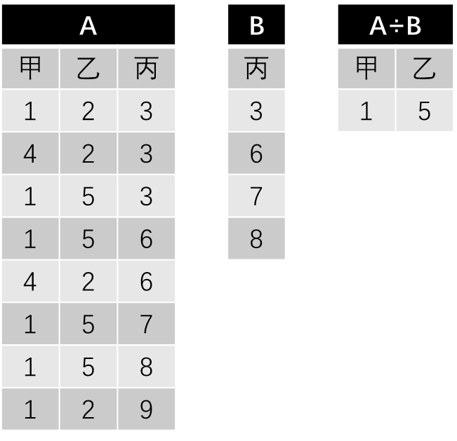
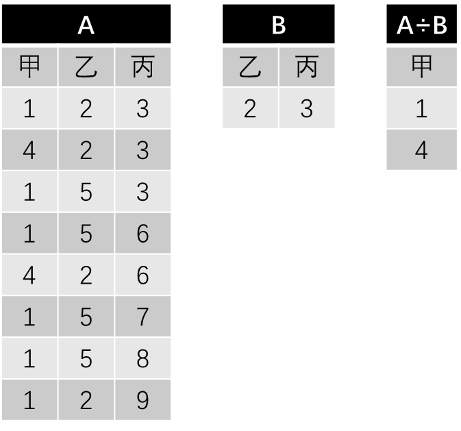

LINQ 教程（8）：LINQ 里的关系代数
什么是关系代数？
关系代数是数据库里面需要用到的一个重要的理论概念。它针对于表进行加减乘除等等的定义操作。下面我们就一一来看下，关系代数里都有些啥。
关系代数运算
加法（并集）
关系代数里，把两个表加起来（$A \cup B$），就好比是求得两个表的并集。注意，在 LINQ 里，两个列表要求获取并集需要两个列表是同元素类型的。比如，我们只能针对于两个 IEnumerable<int> 作运算，尝试把 IEnumerable<int> 和 IEnumerable<char> 作并集是没有意义的。

好在，在 LINQ 里面提供了 Union 方法，可以用来提供作出并集操作：
1 | var result = list1.Union(list2); |
那么，如果 list1 里有 1、2、3，而 list2 里有 2、 3、 5 的话，那么 result 里就有 1、2、3、5 了。
减法（差集）
将两个表求差（$A \backslash B$ 或 $A - B$），就好比取出被减集合里有，而减集合里没有的元素。

在 LINQ 里，我们可以使用 Except 方法来获取差集。
1 | var result = list1.Except(list2); |
那么，如果 list1 里有 1、2、3，而 list2 里有 2、 3、 5 的话，那么 result 里就是 1。
可见，减法操作是要区分被减集合和减集合的。
对称差集
对称差集又表示为 $A - B \cup B - A$，即取两种差集的并集。

我们可以使用 SymmetricalExcept 方法获取对称差集。
1 | var result = list1.SymmetricalExcept(list2); |
由于最终用到了并集，所以计算过程并不区分调用方和被调用方，即你写成 list2.SymmetricalExcept(list1) 也是一样的。
点乘法（交集）
为了区分这里的乘法和笛卡尔积的区别，我们把这里的乘法叫做点乘，而笛卡尔积我们表示为叉乘。
点乘两个表（$A \cap B$）相当于为两个表作交集处理，取出都有的部分。

它使用的是 LINQ 里的 Intersect 方法。
1 | var result = list1.Intersect(list2); |
那么，如果 list1 里有 1、2、3，而 list2 里有 2、 3、 5 的话，那么 result 里就是 2、3。
叉乘法（笛卡尔积）
笛卡尔积在前文已经提到过了，它的模式是获取两个表的一一匹配的结果。我们使用的是 SelectMany 来实现的（当然你也可以用查询表达式实现），最终得到的结果通过匿名类型或者元组的方式返回出来，即可达到叉乘效果。
1 | var result = list1.SelectMany(d1 => list2.Select(d2 => (d1, d2))); |
或
1 | var result = from d1 in list1 |
这样就可以实现了。
补集
在 LINQ 的世界里，是不好实现补集一说的，因为全集是不清楚的。如果你要实现它，你可以尝试给出一个全局集合，然后作出补集。不过，这好比是使用全局集合减去当前集合得到的，所以补集完全不必去实现。

它的公式大概就是 $A^C = \Omega - A$，其中 $\Omega$ 表示全局集合。
选择
选择就是横向获取所有满足指定条件的对象。它相当于 Where 筛选方法。
1 | var result = list1.Where(v => v >= 5); |
这样就选择出了所有大于等于 5 的元素。
投影
投影就是纵向获取所有指定字段的信息。比如，我有一堆学生，学生包含姓名、学号等信息，我可以尝试使用 Select 方法获取所有学生的学号。
1 | var result = students.Select( |
这样筛选出来的就是所有学生的姓名、年龄和性别三大属性值。
连接
连接表（Join）在前面已经讲了很多了，所以这里我们就不再赘述了，不过需要注意的是，它还有很多操作，例如自然连接、非等值连接等等。
除法
除法理解起来比较困难，所以我们把它放在最后讲，而且我们得分四个例子给大家解释。

第一个实例给出了 A 和 B 两个表，现在要获取两个表的商。除法运算的模式是，先找到第一个表在第二个表里没有的字段，即这里的甲和乙，然后每一个元组都看一遍。看看所有当前元组对应行上的对应 B 表的丙字段的数值有没有包含。如果包含就取出来。
我们发现，A 表第 1、2、3 行的元组信息里，丙字段的数值都是 3，所以这三个元组的甲乙两个字段的投影便是 A 除以 B 的商。

第二个例子稍微难一点。B 表多了一个值，那么筛选 A 表元组的时候，就必须要看，是否筛选出来的集合，包含了全部 B 给出的信息值。举个例子，B 表的丙字段是 3 和 6，我们就必须在 A 表里找到所有记录，这些记录的丙字段要包括所有 3 和 6。
我们尝试整理 A 表，发现 A 表记录里甲乙字段值为 4 和 2 的所有记录里，丙字段为 3 和 6，把 B 表给定的丙字段的结果全部包含在内，所以 4 和 2 是一个结果；同理，发现 A 表满足类似要求的还有 1 和 5 的所有信息，它们素有记录里也全部含有 3 和 6（只需要全部包含即可，可以允许有多出来的部分，比如 1 和 5 还包含了丙字段的 7、8、9 的信息）。

第三个例子和第二个例子类似，发现 A 表里甲乙字段记录为 1 和 5 的信息的所有的丙字段分别为 3、6、7、8、9，完整包含了 3、6、7、8，所以甲乙字段 1 和 5 是这个结果的一个记录。不过这个例子里，只有这一个结果满足要求，所以只有它。

最后一个例子里，B 表是两个记录，所以我们只能去筛选 A 表里甲字段的信息。发现，能够完整包含 B 表信息的所有数据的，只有甲字段为 1 和 4 的时候，它们的记录分别为 1、2、3 和 4、2、3，完整包含了 B 表乙丙字段的 2 和 3，所以 1 和 4 是这个除法的结果。
不过遗憾的是，LINQ 并不能够很好地实现除法运算，因为它需要保证两个表的信息能够被正确投影，而在 LINQ 里，投影出来的结果一般用匿名类型或元组表示，但匿名类型和元组我们没有基类可以使用，所以我们不能够简单地表达出这些字段或属性的信息，所以即使是想要使用反射，也是非常困难的。而在 SQL 里，例如 R(X, Y)÷S(Y, Z) 的运算用结构化语言 SQL 语句可表达为下列形式：
1 | select distinct R.X from R R1 |
即利用的是双重否定表肯定的语义逻辑。